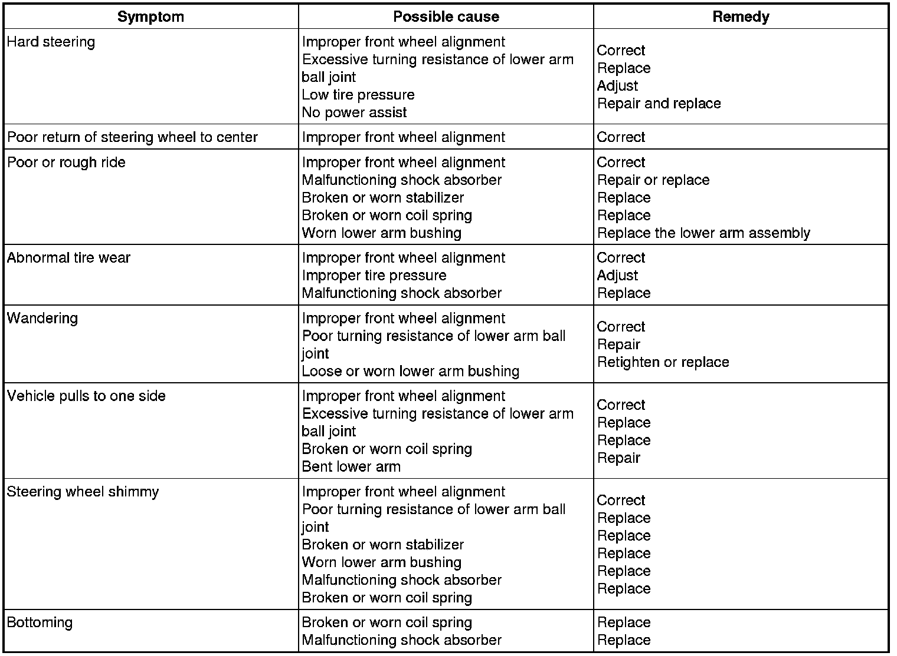
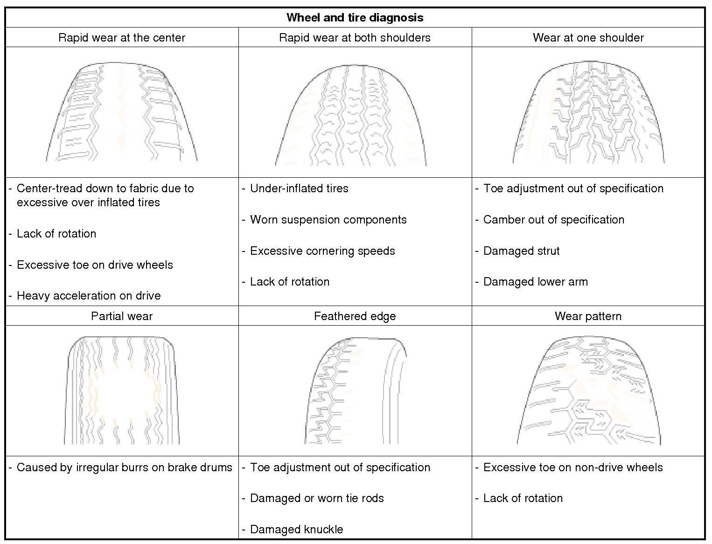

Suspension: Testing and Inspection
Troubleshooting

Wheel /tire noise, vibration and harshness concerns are directly related to vehicle speed and are not generally affected by acceleration, coasting or decelerating. Also, out-of-balance wheel and tires can vibrate at more than one speed. A vibration that is affected by the engine rpm, or is eliminated by placing the transmission in Neutral is not related to the tire and wheel. As a general rule, tire and wheel vibrations felt in the steering wheel are related to the front tire and wheel assemblies. Vibrations felt in the seat or floor are related to the rear tire and wheel assemblies. This can initially isolate a concern to the front or rear.
Careful attention must be paid to the tire and wheels. There are several symptoms that can be caused by damaged or worn tire and wheels. Perform a careful visual inspection of the tires and wheel assemblies. Spin the tires slowly and watch for signs of lateral or radial runout. Refer to the tire wear chart to determine the tire wear conditions and actions
